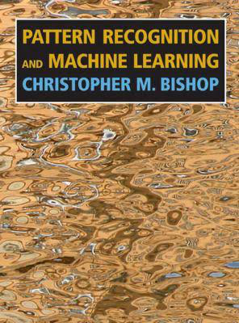
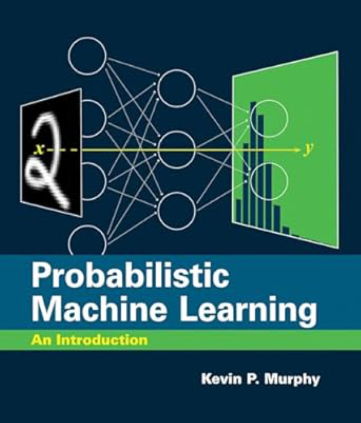
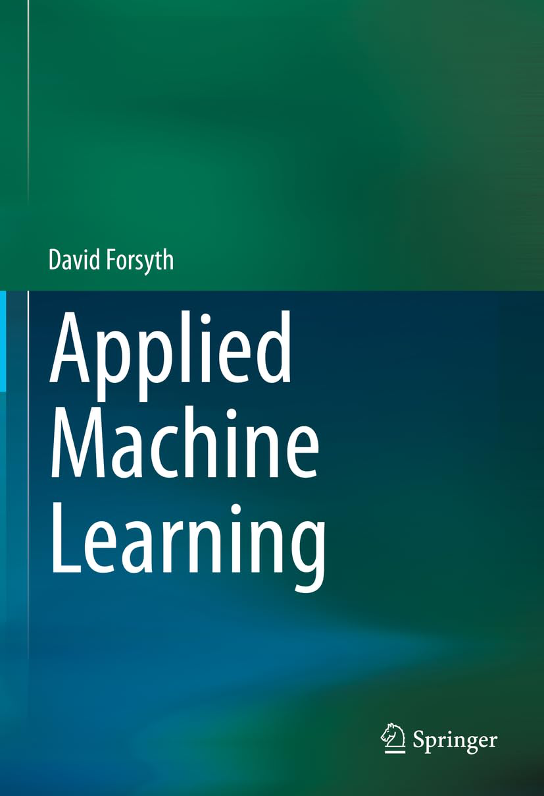
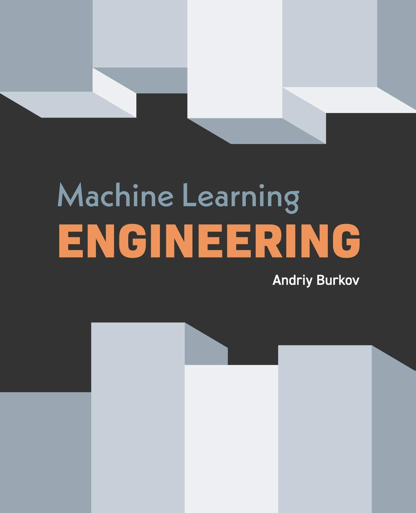
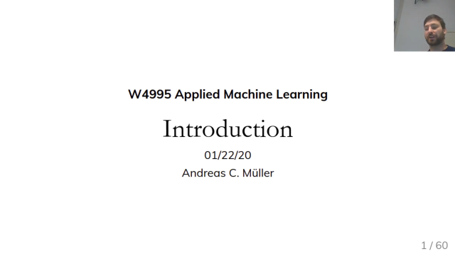

Books

★
★
★
★
☆
Author: Christopher M. Bishop
Pages: 738
This is the first textbook on pattern recognition to present the
Bayesian viewpoint. The book presents approximate inference
algorithms that permit fast approximate answers in situations where
exact answers are not feasible. It uses graphical models to describe
probability distributions when no other books apply graphical models
to machine learning. No previous knowledge of pattern recognition or
machine learning concepts is assumed. Familiarity with multivariate
calculus and basic linear algebra is required, and some experience
in the use of probabilities would be helpful though not essential as
the book includes a self-contained introduction to basic probability
theory.
Price: €71.61

★
★
★
★
☆
Authors: Kevin P. Murphy
Pages: 864
This book offers a detailed and up-to-date introduction to machine
learning (including deep learning) through the unifying lens of
probabilistic modeling and Bayesian decision theory. The book covers
mathematical background (including linear algebra and optimization),
basic supervised learning (including linear and logistic regression
and deep neural networks), as well as more advanced topics
(including transfer learning and unsupervised learning).
End-of-chapter exercises allow students to apply what they have
learned, and an appendix covers notation.
Price: €95.95

★
★
★
★
☆
Author: David Forsyth
Pages: 515
Machine learning methods are now an important tool for scientists,
researchers, engineers and students in a wide range of areas. This
book is written for people who want to adopt and use the main tools
of machine learning, but aren't necessarily going to want to be
machine learning researchers. Intended for students in final year
undergraduate or first year graduate computer science programs in
machine learning, this textbook is a machine learning toolkit.
Applied Machine Learning covers many topics for people who want to
use machine learning processes to get things done, with a strong
emphasis on using existing tools and packages, rather than writing
one's own code.
Price: €102.17

★
★
★
★
☆
Athour: Andriy Burkov
Pages: 310
From the author of a world bestseller published in eleven languages,
The Hundred-Page Machine Learning Book, this new book by Andriy
Burkov is the most complete applied AI book out there. It is filled
with best practices and design patterns of building reliable machine
learning solutions that scale. Andriy Burkov has a Ph.D. in AI and
is the leader of a machine learning team at Gartner. This book is
based on Andriy's own 15 years of experience in solving problems
with AI as well as on the published experience of the industry
leaders.
Price: €39.49
Lectures

Department of Computer Science, Cornell University
Instuctor: Kilian Weinberger
★
★
★
★
☆
Number of lectures: 41
Total Duration: 1 day, 7 hours, 15 minutes, 38 seconds
Description:
The goal of this course is to give an introduction to the field of
machine learning. The course will teach you basic skills to decide
which learning algorithm to use for what problem, code up your own
learning algorithm and evaluate and debug it. The field of machine
learning is concerned with the question of how to construct computer
programs that automatically improve with experience. Recently, many
successful machine learning applications have been developed,
ranging from data-mining programs that learn to detect fraudulent
credit card transactions, to information-filtering systems that
learn users' reading preferences, to autonomous vehicles that learn
to drive. There have also been important advances in the theory and
algorithms that form the foundation of this field. This course will
provide a broad introduction to the field of machine learning.

Department of Computer Science, Columbia University
Instuctor: Andreas C. Müller
★
★
★
★
☆
Number of lectures: 22
Total Duration: 1 day, 2 hours, 35 minutes, 48 seconds
Description:
This class offers a hands-on approach to machine learning and data
science. The class discusses the application of machine learning
methods like SVMs, Random Forests, Gradient Boosting and neural
networks on real world dataset, including data preparation, model
selection and evaluation. This class complements COMS W4721 in that
it relies entirely on available open source implementations in
scikit-learn and tensor flow for all implementations. Apart from
applying models, we will also discuss software development tools and
practices relevant to productionizing machine learning models.

Computer Science, Stanford University
Instuctor: Jure Leskovec
★
★
★
★
☆
Number of lectures: 60
Total Duration: 22 hours, 23 minutes, 15 seconds
Description:
Complex data can be represented as a graph of relationships between
objects. Such networks are a fundamental tool for modeling social,
technological, and biological systems. This course focuses on the
computational, algorithmic, and modeling challenges specific to the
analysis of massive graphs. By means of studying the underlying
graph structure and its features, students are introduced to machine
learning techniques and data mining tools apt to reveal insights on
a variety of networks.

Computer Science, Stanford University
Instuctor: Andrew Ng
★
★
★
★
☆
Number of lectures: 20
Total Duration: 22 hours, 23 minutes, 15 seconds
Description:
Led by Andrew Ng, this course provides a broad introduction to
machine learning and statistical pattern recognition. Topics
include: supervised learning (generative/discriminative learning,
parametric/non-parametric learning, neural networks, support vector
machines); unsupervised learning (clustering, dimensionality
reduction, kernel methods); learning theory (bias/variance
tradeoffs, practical advice); reinforcement learning and adaptive
control. The course will also discuss recent applications of machine
learning, such as to robotic control, data mining, autonomous
navigation, bioinformatics, speech recognition, and text and web
data processing.